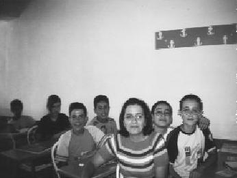

TUP, hayatımın en önemli yerinde ve her şeyi TUP'la ifade ediyorum. Projeyi anlatmak için sürekli uğraşmaktayım. Her üniversite öğrencisi bu deneyimi yaşamalı, oradaki değerler bir süre sonra kişinin yaşam kriterleri hâline geliyor. (Hayriye Arıcı)
Bir gün bir fotoğraf getirdiler. Antalya'nın Elmalı Kasabası'nda bir böceğimiz masa kurmuş, kitap bağışı topluyor. O kitaplarla kütüphane kurdu Hayriye. Bir sene projeyi yürüttü. O ince ve duygulu sesiyle projeyi her anlattığında yeniden duygulanıyorduk. Daha öğrenciyken öyle şeyler başardı ki şahane bir avukat olacağına eminim. Benim gönlüm hâkim olmasından yana, çünkü Hayriye gibi hâkimlere ihtiyacımız var.